Annotations draw attention to parts of a page: an outline around a field, a callout explaining a button, a cover over something private. They sit on an overlay above the page and follow their elements as the page scrolls or changes layout, and they show up in screenshots and recordings until you clear them. They belong to the current document, so navigating away removes them.
This article tours every kind of annotation on the task tracker bundled with paparazzi. The Get started article covers selectors and scopes; the walkthrough uses annotations in longer recordings. You’ll need a Chromium-based browser. The GIF recordings at the end need gifski, and the keystroke callouts in a GIF also need av.
library(paparazzi)
page <- pz_open(
pz_example("tasks"),
width = 720,
height = 800,
color_scheme = "light"
)Marks
pz_annotate()
draws a mark on every element matching target, which is a
selector, a pz_loc()
spec, or a list of targets. With no target, it marks the current scope.
There are four mark types:
-
"box"(the default) outlines the element. -
"circle"draws an ellipse around it, with room for things that aren’t rectangular. -
"underline"strokes along the element’s bottom edge. -
"highlight"lays a translucent fill over the element, blended with the page.
page |>
pz_annotate("#task-title", type = "box", label = "box") |>
pz_annotate("#add-task", type = "circle", label = "circle") |>
pz_annotate(
pz_loc(".task-title", which = "first"),
type = "underline",
label = "underline"
) |>
pz_annotate(
pz_loc(".task", which = 2),
type = "highlight",
label = "highlight"
)
page |> pz_screenshot(frame = pz_frame("main", pad = 16))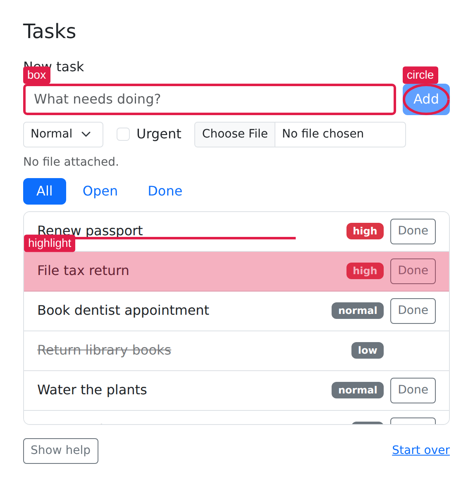
Here and below, each screenshot passes a pz_frame() so the
still is cropped to what it discusses. Marks stay on the page after
they’re drawn, so clear them between examples:
page |> pz_annotate_clear()A mark is clipped wherever its target is. If a task row has scrolled out of the scrolling task list, its mark is cut off at the list’s edge instead of being drawn over whatever sits below the list. A mark also hides while its target is hidden or removed from the page.
Badges
label adds a small badge to each mark.
label = TRUE numbers the matches in document order, which
is handy when a screenshot refers to “item 3”:
page |> pz_annotate(".filters a", label = TRUE)
page |>
pz_screenshot(
frame = pz_frame(".filters", pad = 16, target_box = "annotated")
)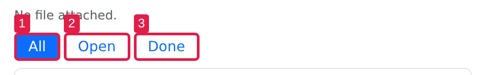
A single string or number repeats on every match instead, so
label = "A" or label = 1 puts the same badge
everywhere the target matches.
page |> pz_annotate_clear()Padding, color, and fonts
pad grows the mark beyond the element’s box: one number
for all sides, or c(top, right, bottom, left).
color accepts any CSS color for the outline and badge,
stroke_width sets the outline’s thickness in CSS pixels,
and font_family and font_size style the badge
text. The badge is filled with the mark’s color and has white text;
label_fill and label_text_color change that
for one call. Color, stroke width, and fonts default to the page’s
staged settings, which Styling defaults
covers below.
page |>
pz_annotate("#task-title", type = "highlight", pad = 6, color = "#f59e0b") |>
pz_annotate(
"#task-priority",
label = "A",
pad = c(2, 6, 2, 6),
color = "#2563eb",
font_family = "monospace",
font_size = 16
)
page |> pz_screenshot(frame = pz_frame("#new-task", pad = 24))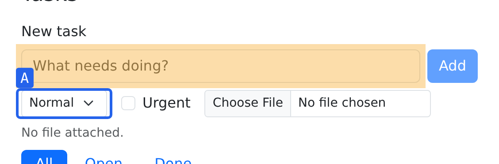
page |> pz_annotate_clear()Callouts
pz_annotate_callout()
draws a bubble next to each matching element, repeating the same
text for every match. side picks where the
bubble goes: a cardinal side ("top", "right",
"bottom", "left") or a diagonal like
"top right". The default, NULL, chooses the
cardinal side with the most room. A bubble is kept inside the viewport
even if that moves it off the requested side. A callout hides while its
target is hidden or scrolled out of view inside a scrolling container.
If only part of the target is visible, the leader points at that part.
The bubble itself is never cut off.
A leader line runs from the bubble to the element, with an arrow at
the element’s end. leader = FALSE drops the line for a
tooltip-style bubble, and label adds a badge just like on
marks.
page |>
pz_annotate_callout(
"Name the task",
target = "#task-title",
side = "top",
label = 1
) |>
pz_annotate_callout(
"Priority is optional",
target = "#task-priority",
side = "bottom",
leader = FALSE
)
page |>
pz_screenshot(
frame = pz_frame("#new-task", pad = 12, target_box = "annotated")
)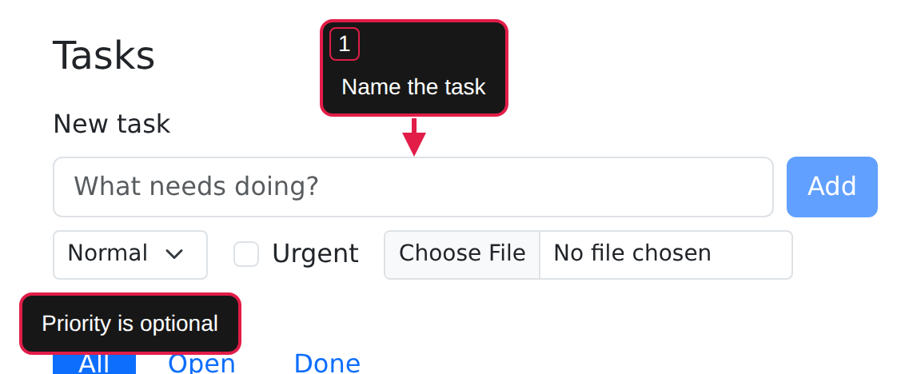
page |> pz_annotate_clear()The frame’s target_box = "annotated" keeps the crop wide
enough to include the bubbles; Framing
stills explains what that does.
Leaders and bubble colors
leader also takes a decoration for each end of the line:
start is the bubble’s end and end is the
element’s. Each can be "none", "arrow",
"dot", or "bar", and an end you leave out gets
"none". distance sets the gap between the
bubble and the element in CSS pixels (24 by default, or 8 for a bubble
without a line), and stroke_width sets the line’s
thickness, which also sizes the decorations.
The bubble is dark with white text unless you say otherwise.
fill and text_color change the bubble’s
background and text, while color still sets its border and
the line:
page |>
pz_annotate_callout(
"Add it to the list",
target = "#add-task",
side = "bottom",
leader = c(start = "dot", end = "arrow"),
distance = 40,
fill = "#fef3c7",
text_color = "#171717"
)
page |>
pz_screenshot(
frame = pz_frame("#new-task", pad = 12, target_box = "annotated")
)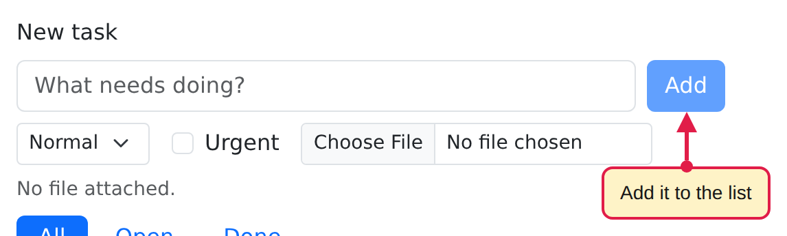
page |> pz_annotate_clear()Spotlight
pz_annotate_spotlight()
dims the whole page except for a rounded cutout around each target, so
the reader’s eye goes straight to what matters. dim sets
the opacity of the black scrim from 0 (transparent) to 1 (black),
defaulting to 0.6, and pad grows the cutouts. A list of
targets gets one cutout each. A cutout only opens over the visible part
of its target, so a target scrolled out of a scrolling container gets no
cutout.
page |>
pz_annotate_spotlight(
list("#task-title", "#add-task"),
pad = 8,
dim = 0.75
)
page |> pz_screenshot(frame = pz_frame("main", pad = 24))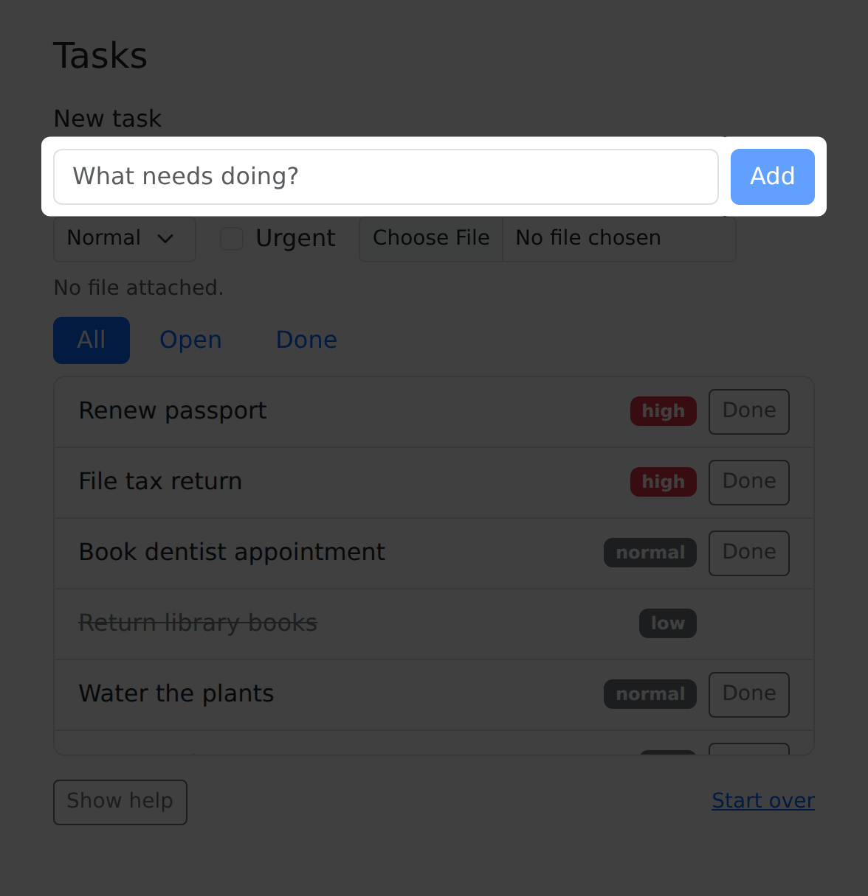
There is only one spotlight per page: drawing a new one replaces the old. Clear it by its reserved id or by clearing everything:
page |> pz_annotate_clear(id = "spotlight")Redaction
pz_annotate_redact()
covers elements so their contents don’t reach the screenshot or
recording. method = "fill" (the default) paints an opaque
cover, near-black unless you pass a color:
page |> pz_annotate_redact('[data-priority="high"] .task-title', method = "fill")
page |>
pz_screenshot(
frame = pz_frame('[data-priority="high"] .task-title', pad = 24, target_box = "annotated")
)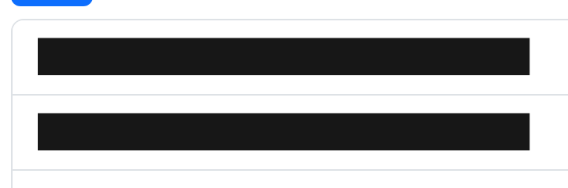
page |> pz_annotate_clear()method = "blur" blurs what’s underneath instead:
page |> pz_annotate_redact('[data-priority="high"] .task-title', method = "blur")
page |>
pz_screenshot(
frame = pz_frame('[data-priority="high"] .task-title', pad = 24, target_box = "annotated")
)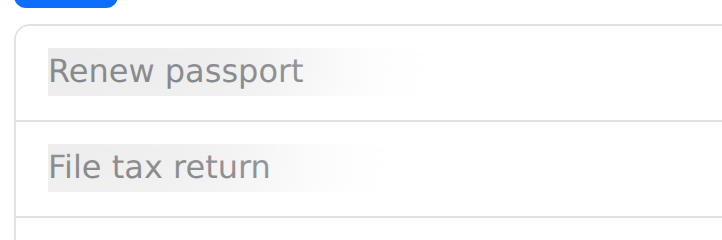
page |> pz_annotate_clear()Use fill for real secrets: blur can leave short text partly legible,
and a fill stays opaque even if you give it a translucent color. A
redaction covers each element’s border box plus pad, but
not content overflowing the element, so redact the element that actually
overflows or add padding. Like marks, redactions are clipped by
scrolling containers and hide if their target is hidden or removed.
Clipping follows overflow but not a custom
overflow-clip-margin. Redactions draw instantly, so add
them before starting a recording: frames captured earlier can
already contain the text.
Captions
pz_annotate_caption()
adds a caption in screen space: a dark panel floating at the
side = "bottom" (the default) or "top" edge of
the capture. It’s not attached to an element. It persists through
navigation and across recordings, and it’s composited onto stills.
Newlines are preserved.
page |> pz_annotate_caption("Seven tasks, two clicks from done")
page |> pz_screenshot()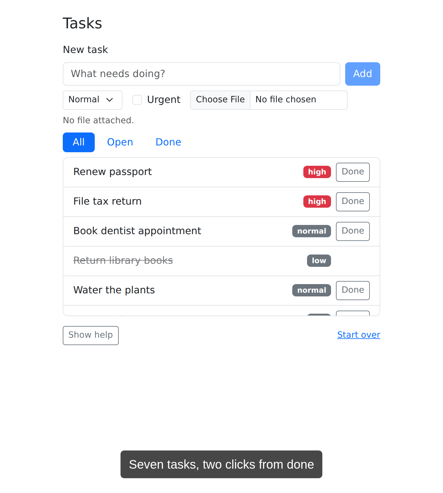
The caption sits at the edge of the viewport, so a full-page still shows it as above. In a still cropped to a frame, the caption appears wherever it happened to be on screen, which is rarely what you want; captions belong to full-page stills and recordings.
Calling pz_annotate_caption() again replaces the
caption. Remove it by its reserved id:
page |> pz_annotate_clear(id = "caption")Clearing and replacing
pz_annotate_clear()
removes one annotation by id, or every annotation when
id is NULL. The reserved ids
"spotlight" and "caption" clear those types;
your own marks, callouts, and redactions take any nonempty id. Reusing
an id replaces that annotation instead of stacking a second one:
page |> pz_annotate("#task-title", id = "mark")
page |> pz_annotate("#add-task", type = "circle", id = "mark")
page |> pz_screenshot(frame = pz_frame("#new-task", pad = 16))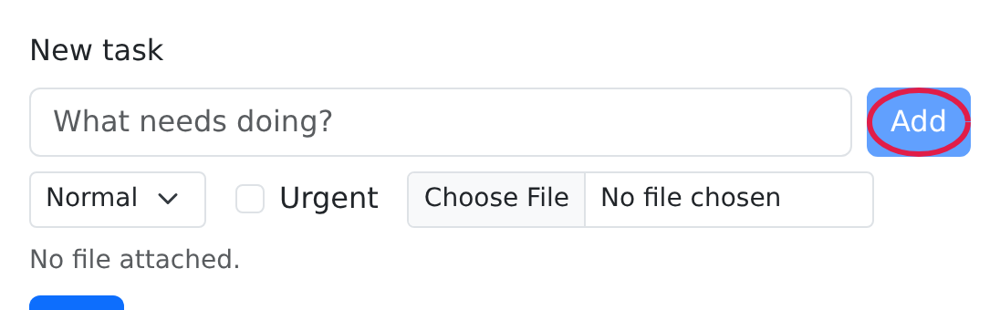
page |> pz_annotate_clear()Only the circle remains: the second id = "mark" call
replaced the box. During an active recording, clearing plays the
annotation’s reveal in reverse; in stills, annotations disappear
instantly.
Styling defaults
Every annotation defaults to the page’s staged color, stroke width,
font family, and badge size, and every callout to the staged bubble
colors and distance. Change them for all later annotations with pz_stage_annotate(),
and pass NULL to restore a default (crimson
#e11d48, 3 pixel lines, sans-serif, 14 pixel text, and
callouts with white text on #171717, 24 pixels away or 8
without a line):
page |>
pz_stage_annotate(
color = "#2563eb",
font_family = "monospace",
font_size = 18
) |>
pz_annotate("#add-task", label = "A")
page |>
pz_screenshot(
frame = pz_frame("#new-task", pad = 8, target_box = "annotated")
)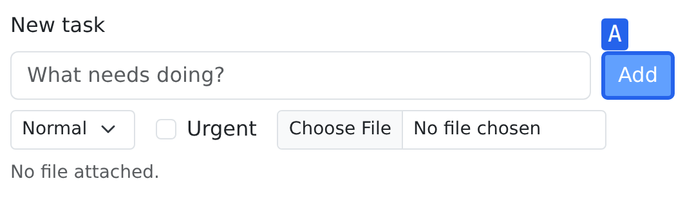
page |> pz_annotate_clear()
page |>
pz_stage_annotate(
color = NULL,
font_family = NULL,
font_size = NULL
)Per-call arguments with the same names override the staged values for
that call. Mark badges are the exception: they ignore the staged
fill and text_color and follow the mark’s
color unless you pass label_fill or
label_text_color.
Web fonts
A font_family string names a font Chrome can already
find, such as a generic family like "monospace" or a font
installed on the machine running Chrome. To use a web font, load it into
the page first with pz_stage_fonts().
Declare the font with pz_font_google(),
pz_font_bunny(),
or pz_font_file()
for a font file on disk. pz_stage_fonts() waits until the
font has loaded, so no annotation is ever drawn in a fallback font while
it downloads.
A handwritten font makes a callout look like a note written over the screenshot. We’ll stage Patrick Hand from Google Fonts and make it the default for later annotations:
hand <- pz_font_google("Patrick Hand")
page |>
pz_stage_fonts(hand) |>
pz_stage_annotate(font_family = hand, font_size = 18) |>
pz_annotate_callout(
"Optional: attach a file",
target = "#attachment",
side = "bottom"
)
page |>
pz_screenshot(
frame = pz_frame("#new-task", pad = 8, target_box = "annotated")
)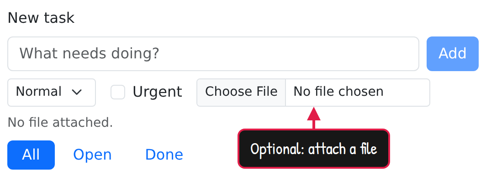
The font object works anywhere font_family does. It
stands for the CSS string '"Patrick Hand", sans-serif', so
text falls back to sans-serif for characters the font lacks. A font
object that isn’t staged on the page is an error. Captions and keystroke
callouts follow the staged font_family too, and staged
fonts stay with the page when it navigates to a new document.
Google and Bunny fonts are downloaded by Chrome, so staging them
needs a network connection. pz_font_file() reads the file
in R and works offline.
page |> pz_annotate_clear()
page |> pz_stage_annotate(font_family = NULL, font_size = NULL)Framing stills
A screenshot’s frame is measured from the target’s elements. Badges
and callouts paint outside those elements, so the default
target_box = "element" can crop them off.
target_box = "annotated" measures the elements plus their
attached marks, callouts, and spotlight cutouts. Here’s the difference
on the same callout:
done <- ".filters a[href='#done']"
page |> pz_annotate_callout("Finished tasks", target = done, side = "right")
page |> pz_screenshot(frame = pz_frame(done, pad = 24))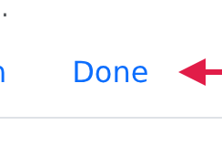
page |>
pz_screenshot(
frame = pz_frame(done, pad = 24, target_box = "annotated")
)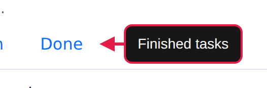
page |> pz_annotate_clear()Redactions and annotations on unrelated elements are never included.
target_box = "annotated" applies to stills; a recording’s
home frame always uses the element box.
Reveals
So far every mark has appeared fully drawn, because reveal animations
only play during an active, unpaused recording. reveal
chooses the animation: "fade", "draw" (the
stroke draws itself), "pop", "slide",
"wipe" (sweeps clockwise from 12 o’clock), or
"none". The defaults are fade for boxes, draw for the other
mark types, pop for callouts, and fade for spotlights. Clearing an
annotation plays its reveal in reverse. This recording shows a box
fading in, a circle drawing itself, and a callout popping in, then all
three reversing out:
page |>
pz_record_start(
frame = pz_frame("#new-task", pad = 40, when = "start"),
scale = 0.6,
hold = c(0.3, 0.5)
) |>
pz_annotate("#task-title", type = "box") |>
pz_record_hold(0.4) |>
pz_annotate("#task-priority", type = "circle") |>
pz_record_hold(0.4) |>
pz_annotate_callout(
"Then press Add",
target = "#add-task",
side = "bottom"
) |>
pz_record_hold(1) |>
pz_annotate_clear()The recording stops when the chain ends, and with no path it’s
written into the article as an MP4. Pass a path to choose the file, or
format = "gif" for a GIF.
Keystroke callouts
One more callout exists only in recordings: pz_act_press(show_keys = ...)
shows the keys being pressed as keycaps. "words" spells out
modifier names, "mac" uses Mac symbols, and
"both" shows Mod as Ctrl / ⌘. The
default is "none"; set pz_stage(show_keys = ...)
to change it for a whole page.
page |>
pz_record_start(
frame = pz_frame("#new-task", pad = 24, when = "start"),
scale = 0.6
) |>
pz_act_click("#task-title") |>
pz_act_type("Water the dog", target = "#task-title") |>
pz_act_press("Enter", show_keys = "mac") |>
pz_expect_text(
"Water the dog",
target = pz_loc(".task-title", which = "first")
)Keystroke callouts appear only in recordings, never in stills, and
each pz_act_press() call replaces the previous callout.
Finally, close the page to shut down the browser:
pz_close(page)For annotations in a longer narrative recording, see the three-part app walkthrough; the function reference lists every annotation function with its arguments.